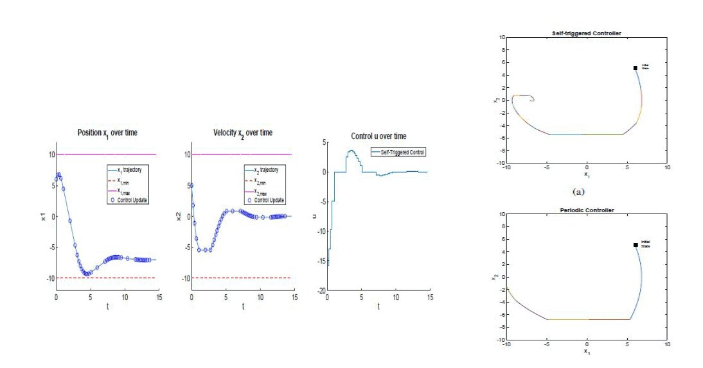

Experience

FLUENT Robotics Lab
- Robot Perception and Navigation
- Visual/Visual-inertial SLAM (RTABmap, VINS, Kimera, ORB-SLAM)
- Motion Planning(Move base)
- Git
- C++
- Python
- Pytorch
- CUDA
- Bash/Shell scripting
- Deep Learning
- ROS
- ROS2
- Docker
- Cmake
- Opti Tracker and Motive
- System Integration
- Human Robot Interaction
- Full stack software development
- Human Action recognition (PyslowFast)
- Human Pose estimation (OpenPose)
- Object detection and segmentation (Detectron2)


Biologically Inspired Robotics and Dynamical Systems Lab


Distributed Aerospace Systems and Control Laboratory
